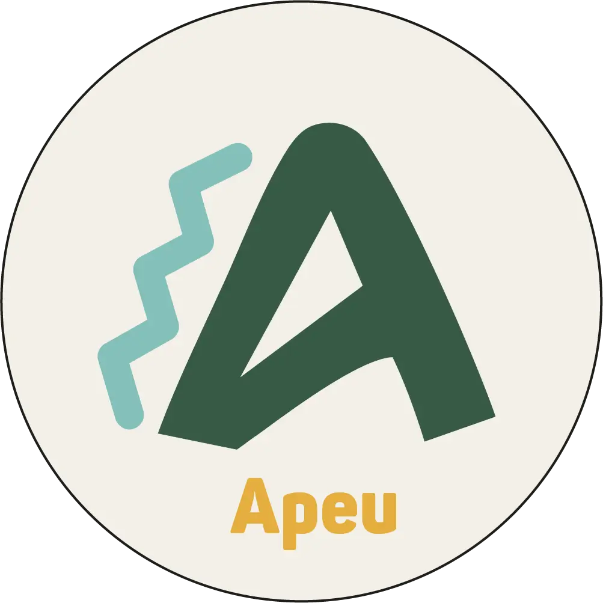

04.
Trabajo individual



Apeu, que en mapudungun significa “cuento”, es un proyecto que propone una nueva forma de conexión con el Parque Nacional Vicente Pérez Rosales, a través de un souvenir interactivo pensado para niños y niñas. Inspirado en los Saltos del Petrohué, Apeu es un proyector portátil de cuentos que busca transmitir historias ligadas a la biodiversidad, el territorio y la cultura del lugar.